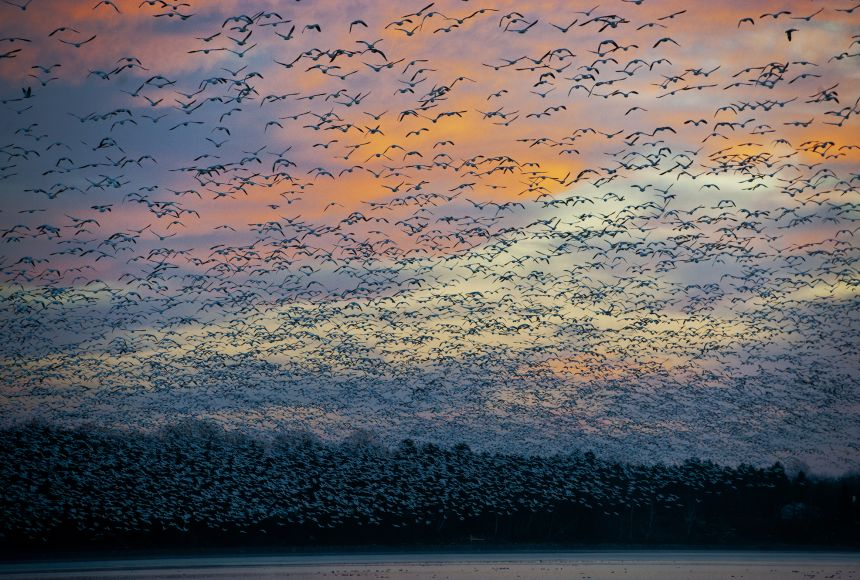
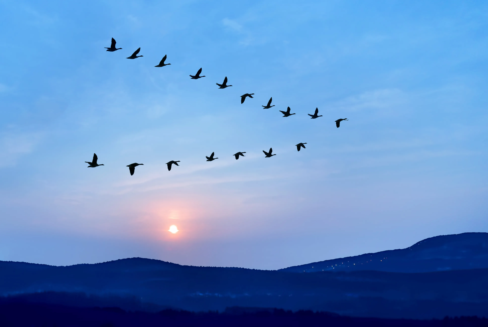
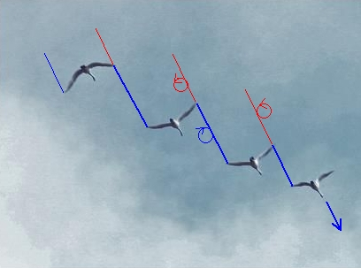

What is this: Animal migration patterns
Greater Snow Geese flying over the Saint Francis river in southeastern Missouri.
Source: NatGeo
Why do some species migrate and others don't? Why will some birds travel from the south to the north pole each year?
Migration is the seasonal movement of animals from one habitat to another in search of food, better conditions, or reproductive needs. Two factors that make migration different to emigration
- It happens seasonally
- It involves a return journey
Migration is found in all major animal groups, including birds, mammals, fish, reptiles, insects, and amphibians, yet it can take very different forms in different species, and has a variety of causes. In the case of humpback whales, in summer they travel to feeding grounds near polar ice, where the water is full of krill and small fish, and migrate back to warmer waters to raise their calves.
Most migrations involve horizontal travel, and the distance ranges from a few miles to thousands, potentially taking a vertical direction. Certain aquatic animals, for example, move from deep water to the surface according to the season. Certain birds, mammals and insects migrate latitudinally in mountainous areas.
Darwin noted that barriers to migration played an important role in the differences between the species of different regions. The coastal sea life of the Atlantic and Pacific sides of Central America had almost no species in common even though Panama is only a few hundred miles wide. His explanation was a combination of migration and descent with modification.
History of migration
While short-distance migration probably developed from a fairly simple need for food, the origins of long-distance migration patterns are much more complex, and likely evolved over thousands of years and are controlled partially by the genetic make-up, as well as responses to weather, geography, food sources, day length, etc.
The mechanisms initiating migratory behaviour vary and are not always completely understood, and can be triggered by a combination of changes in day length, lower temperatures, changes in food supplies, and genetic predisposition. For centuries, people who have kept cage birds have noticed that the migratory species go through a period of restlessness each spring and fall, repeatedly fluttering toward one side of their cage.
How do they do it?
Migrating animals can find their way over long and complex routes. They use land features such as rivers and mountains to tell where they are. Scientists think that many animals use the position of the Sun and stars to find their way too, as well as Earth’s magnetic field.
Bats and sea turtles use magnetic information to find their way, as do some forms of bacteria. Small particles of a magnetic mineral called magnetite have been found in the brains of some species.
Almost every major lineage of animal alive today took advantage of opportunities to move around and spread, sometimes ending up in surprising places. This happens slowly over geological timescales, as animals evolve to fit slightly different environments. Allegedly all marsupials (kangaroos, wombats, koala) in Australia are thought to be the result of just a couple of rafting events between Antarctica and Australia. It’s also surprising how much migration occurred across the land bridge that used to connect modern-day Alaska and Russia.
Isolated examples
In birds
Approximately ~30-40% of the world’s 10,000 bird species migrate long distances each year in response to the seasons. Many of these are north to south, with species feeding and breeding in high northern latitudes in the summer and moving some hundreds of kilometres south for the winter. A few examples:
- Great Snipes make non-stop flights of ~5,000km lasting around 90 hours, during which they change their average cruising heights from 2,000m at night to around 4,000m during the daytime. They can fly up to 100 kmph, with researchers finding little evidence of wind assistance. Most birds fly ~6,000m, but one reached ~30,000 feet on their seasonal migration between Sweden and sub-Saharan Africa.
These therefore follow a diel flight cycle, one hypothesis being that the birds face additional heating by solar radiation during daytime and so must climb to avoid overheating. But could also be due to orientation and predator avoidance.
- Bar-Tailed Godwits have the longest known non-stop flight of any bird (~11,000km, Alaska to NZ, 10 days), and also the longest journey without pausing to feed by any animal, performing a round trip of ~30,000km. They spent the summer in the Arctic, where they breed, then move to the south in winter to more temperate areas, travelling as far as Australia. They store ~55% of their bodyweight as fat to fuel the uninterrupted journey. They actually reduce the size of their digestive organs to do so.
Interestingly: they seem to be able to predict weather patterns that will assist them on the entire migration route. Birds that had nested in southern Alaska were larger and departed New Zealand earliest.
- Arctic Terns, weighing 90g, have the longest migration journey of any bird: it flies from its Arctic breeding grounds to the Antarctic and back again each year, a distance of ~19,000 km, giving it two summers every year. They do this in search of summer sunlight, illuminating the ground and the ocean surface so birds can see fish or insects. Migrating this long is tough, but it’s even tougher to find food in the Arctic winter.
A 2010 study used tracking devices and showed that 11 birds bred in Greenland or Iceland covered ~75,000km a year (~205km a day). They can also sleep and eat while gliding, and are so lightweight that they let the ocean breeze carry them great distances without having to use a lot of energy. Here is an example of their routes, in addition to the stop-overs.
Why do some birds migrate, and others don't?
Seasonal regions have higher numbers of migratory birds and in general will migrate to the closest area they can find that best meets their needs. Migration is mostly about energy optimisation; Lotka’s maximum power principle applies here, in the sense that bird species’ distributions should optimise a yearly energetic balance given the environment and competition with other species.
In essence, this says that Species are globally distributed in the most energy-efficient way, and so migration helps many species to optimise their energy budgets.
This paper suggests that the uneven distribution of biodiversity on Earth is one of the most general and puzzling patterns in ecology. One of the most promising hypotheses states that the constraints of energy supply and demand drive animal diversity. According to Lotka’s principle, natural selection should favour organisms that have the most favourable balance between the energetic costs associated with their environment and behaviour and the benefits in terms of access to available energy to fuel metabolism.
They show that bird species distributions optimize the balance between energy acquisition and energy expenditure while taking into account competition with other species. The energy-efficiency of a particular distribution depends on (1) the quantity of available resources that determine the energy relationship, but also (2) on the distribution of other species competing for the same resources.
This should translate into an efficient distribution of all species across the world, in which each species minimises its energy expenditure while targeting areas with maximum energy available given the distribution of other species.
In fish
Most fish species are relatively limited in their movements, remaining in a single geographical area and making short migration to overwinter, to spawn or feed. ~120 species (less than 1%) migrate between saltwater and freshwater (called diadromous, i.e., Salmon who return to their birthplace to mate and die)
Salmon, for example: North American Atlantic salmon migrate in the spring from the rivers where they were born. They move into the Labrador Sea for their first summer, autumn, and winter. The following spring they move to the coastal waters of Labrador and the Canadian Arctic, West Greenland, and sometimes to the waters of East Greenland. They then perform an annual salmon run.
This is where every year, salmon, which are typically hatched in fresh water and live most of their adult life downstream in the ocean, swim back against the stream to the upper reaches of the river to spawn on the gravel beds of small creeks. This happens when they reach sexual maturity. Usually they return with uncanny precision to the natal river where they were born, and even to the very spawning ground of their birth. It is thought that, when they are in the ocean, they use magnetoreception to locate the general position of their natal river, and once close to the river, use their sense of smell to home in on their natal spawning ground.
In mammals
Mammals also undertake migrations; reindeer have one of the longest terrestrial migrations, reaching as much as 4,900km per year in North America. Grey Wolves move the most, covering ~8,000km per year.
Mass migration occurs in mammals such as the Serengeti, which undertake what is called the ‘great migration’; an annual circular pattern of movement with some ~2,000,000 wildebeest and hundreds of thousands of other large game animals.
In insects
Monarch butterflies can be found all over the U.S. and further afield, but it is the northeastern American population that is famous for making the ~5,000 km journey from Canada to Mexico. They leave their northern ranges and fly south to survive the winter.
Modern influences on migration
Climate change and extreme weather events are impacting animal migration patterns. More traditionally non-migratory species are leaving their habitats for cooler, more agreeable environments, travelling further north and to higher ground. Over half the world’s population live in cities, and migratory animals are taking note
For example, Zozu birds typically fly to South Africa for the winter from Europe. When researchers in Germany used GPS loggers on Zozus, they found that a number of birds skipped the gruelling migration across the Sahara Desert, stopping instead in cities like Madrid and Rabat, stopping at landfills in search of food left by humans in stand-alone bins and landfills.
Caribou’s traditionally mate in autumn, are pregnant in the winter, and raise their young in the spring when food is abundant. However, NASA found that they are producing offspring earlier to coincide with the changes in their environment, suggesting that these populations are adapting to climate change. Southern caribou populations that are experiencing less rapid environmental changes produced offspring at their usual time.
Cities have become many species’ homes, but cities still pose a barrier to migration. Researchers at the Nature Conservancy looked at the effect of manmade barriers (e.g., roads, farmland, and urban infrastructure) and found that in the U.S. only ~40% of natural lands were connected enough for animals to migrate via what would’ve been their normal, natural route.
In southern California for example, mountain lions are in decline in part because of the expansive freeways that crisscross the state. When researchers tagged a sample of lions in Santa Ana with GPS devices, they found their natural habitats divided by as many as eight lanes of traffic, as well as houses, golf courses, and other private developments.
Appendix: Bird flying formations
Birds solved turbulence a long, long time ago.
Birds are typically observed to fly in V- or J-shaped formations, the latter commonly known as echelon. It occurs among geese, swans, ducks, and other migratory birds, improving their energy efficiency. Larger birds fly in this formation since smaller birds create more complex wind currents that are hard for the back members to take advantage of. Scientists think smaller birds don’t create enough beneficial updraft. Interestingly, they also improve the fuel efficiency of aircraft.
Eurasian cranes in a V formation.
Source: Getty Images
The first study to attempt to quantify the energy saving of a large flock of birds was in the 1960s, suggesting that each bird can achieve a reduction of induced drag and as a result increase their range by up to 70%. A 2001 study further showed that pelicans flying alone have a higher heart rate and flap more frequently than those flying in V formation.
- In particular, the V formation allows birds that aren’t located at the front to take the upwash lift force generated by the wingtip vortices at the tip of the wings of the lead bird, assisting each bird in supporting its own weight in flight. This is the same way a glider can climb or maintain height in indefinitely rising air.
- As a bird flaps, a rotating vortex of air rolls off each of its wingtips. These vortices mean that the air immediately behind the bird gets constantly pushed downwards (downwash), and the air behind it and off to the sides gets pushed upwards (upwash). If another bird flies in either of these upwash zones, it gets free lift. It can save energy by mooching off the air flow created by its flock-mate.
- Scientists also suspect that birds are able to find the place where uplift is the best most desirable either by sight or by sensing the airflow by their feathers.
Flight characteristics
Flying in V formation is not only about position, but also timing of the flap. The birds behind will sync with the flapping pattern of the leading bird to follow the trail of upwash left by the front bird. Whenever a bird flies to be directly behind another, it will reverse the flapping pattern to counter the downwash force.
In the photo below, behind the leader, the blue lines show that each following bird has its right wingtip in line with the left wingtip of the bird ahead of it.
When the blue vortex meeds the red at the wingtip, they cancel each other out, and by lining up in this fashion, turbulence is also reduced.
Switchover
The lead bird gets no assistance so tires before the rest of the flock. The flock solves this by changing leaders when the first needs rest, with the lead bird dropping back into the V.
Northern ibises were found to take turns at the toughest job during their migration — leading the V-shaped migration. A study found that no single bird took the top spot for an extended period of time. Each ibis would typically spend less than a minute at the vertex of the V. In a one-hour flight, each bird would do a pair-switch with its nearest neighbour an average of 57 times, performing hundreds of switches over several hours. The transitions were nearly seamless, taking about a second to execute.
For young birds, their first journey can be gruelling and deadly, with a 30% mortality rate. Cooperative behaviour is of great interest to scientists, and often it’s found that animals will help other animals out, even if it isn’t in their self interest, if they’re related to that animal. There’s a good evolutionary reason for this: It means that they’re helping another creature carrying at least some of their shared genes to survive and pass them on.
With the ibis example, clearly birds are taking turns and benefiting from this arrangement, but why? The researchers say that this cooperative flight pattern increases the success of direct reciprocation. Using game theory, they argued that non-cooperators, when meeting another non-cooperator, earns less than when dealing with a cooperator.
Similarly, they argue that repeated sessions of in-wake flying encourages cooperation, writing that "the more often two individuals interact in situations where they can cooperate, the higher the potential gains of mutual co-operation." Moreover, the potential gains from continued cooperation are substantial. Studies have shown that altruistic acts are likelier when there's a high benefit to the receiver in relation to the costs for the donor.
Application in commercial flight
Airbus has made efforts to reduce fuel consumption in commercial aviation through its 2020 fello’fly project, where two commercial aircraft fly in V formation. Since large aircraft at high speed generate immense vortices at their wings, two aircraft will fly approximately 1.5-2 miles apart, near the smooth current of updraft, saving significant fuel. Test flights showed that ~10% of fuel can be reduced for the second aircraft per trip.